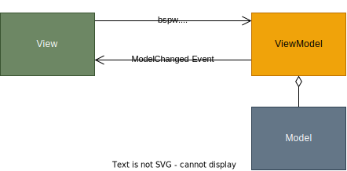

Wiederholung
MVC-Controller
Das MVC (Model-View-Controller) Muster ist ein Software-Design-Pattern, das in vielen Webanwendungen und Softwarearchitekturen verwendet wird. Der Controller ist eine der zentralen Komponenten dieses Musters und spielt eine wichtige Rolle bei der Verarbeitung von Benutzeranfragen und der Steuerung des Programmlaufs.
Model
- speichert die Anwendungsdaten und den Zustand.
- stellt Datenstruktur der Anwendung dar
- entspricht einer oder mehreren Klassen
View
- empfängt Benutzerinteraktionen (z.B. Klicks, Formulareingaben)
- gibt eingegebene Daten an den Controller weiter
- präsentiert die Daten für den Benutzer
- zeigt eine Benutzeroberfläche oder ähnliches
- Empfangen von Benutzeraktionen: Der Controller nimmt Anfragen vom Benutzer entgegen (z.B. durch Klicks oder Formulareingaben).
Aufgaben des Controllers:
- empfängt Benutzerinteraktionen (z.B. Klicks, Formulareingaben).
- verarbeitet Eingaben und entscheidet über die nächste Aktion.
- ruft Daten vom Model ab oder verändert diese.
- übergibt die Daten an die View zur Darstellung.
- kontrolliert den Ablauf der Anwendung und sorgt für die Kommunikation zwischen Model und View.
Funktionsweise:
- Eingabe: Der Controller empfängt eine Anfrage vom View.
- Verarbeitung: Der Controller kann Daten vom Model abfragen und/oder Modifikationen an ihm vornehmen.
- Ausgabe: Die View wird mit neuen Daten oder einer Bestätigung aktualisiert, die dem Benutzer angezeigt werden.
flowchart LR
Controller --> |Model| View
View --> |Model| ControllerMVVM - Model-View-ViewModel

Funktioniert ähnlich wie MVC, aber mit einer zusätzlichen Schicht, dem ViewModel. Der Controller ist hier meist durch das ViewModel ersetzt. Das MVVM ist dynamischer aufgrund seines eventbasierten Systems.
Datenbindung // Events
Es gibt wesentliche Unterschiede, wie häufig die Daten vom Model an die View übergeben werden:
| MVC | MVVM |
|---|---|
| View muss bei Änderungen des Models manuell aktualisiert werden. | Unterstützt zweiwegige Datenbindung, bei der Änderungen im Modell automatisch in der View angezeigt werden und umgekehrt. |
Microservices:
graph TD
Benutzer[Benutzer] -->|Gibt Bestellung auf| Gateway[API-Gateway]
Gateway --> BenutzerService[Benutzer-Service]
Gateway --> ProduktService[Produkt-Service]
Gateway --> BestellService[Bestell-Service]
Gateway --> ZahlungsService[Zahlungs-Service]
Gateway --> BenachrichtigungsService[Benachrichtigungs-Service]
BenutzerService -->|Auth-Anfrage| AuthDB[(Benutzer-Datenbank)]
ProduktService -->|Bestand prüfen| ProduktDB[(Produkt-Datenbank)]
BestellService -->|Bestellung speichern| BestellDB[(Bestell-Datenbank)]
ZahlungsService -->|Zahlung verarbeiten| ZahlungsGateway[Externes Zahlungs-Gateway]
BestellService --> BenachrichtigungsService
BenachrichtigungsService -->|Sende E-Mail/SMS| Benutzer
style Gateway fill:#f9f,stroke:#333,stroke-width:2pxMicroservices ist ein Softwarearchitekturmuster, bei dem eine riesige Anwendung in kleinere, unabhängige Services aufgeteilt wird, die eine spezifische Funktionalität anbieten. Die einzelnen Microservices können untereinander über APIs kommunizieren und werden unabhängig voneinander entwickelt und gewartet.
Siehe auch: Video (Achtung englischsprachiges Video)
Client-Server-Architektur:
graph LR
Client[Client] -->|Sendet Anfrage| Server[Server]
Server -->|Verarbeitet Anfrage| Datenbank[(Datenbank)]
Datenbank -->|Gibt Daten zurück| Server
Server -->|Sendet Antwort| Client
style Client fill:#bbf,stroke:#333,stroke-width:2px
style Server fill:#f9f,stroke:#333,stroke-width:2px
style Datenbank fill:#bfb,stroke:#333,stroke-width:2pxDiese Architektur trennt die Anwendung in zwei Hauptkomponenten: den Client (der die Anfragen stellt) und den Server (der die Anfragen verarbeitet). Dieses Softwarearchitektur-Modell ist beispielsweise bei Webanwendungen zu finden.